PVA Environment Building
PVA开发环境搭建说明
一、开发前准备
1、开发环境
Windows操作系统 32位/64位
相关资源获取，在公司的共享服务器的目录中有全套的开发工具可供快速下载 地址：\\192.168.60.170\xian_Test\10_开发使用工具\PVA开发工具套装
- SVN：源代码版本控制和管理系统
- JDK：Java程序开发和运行环境
- MySQL：关系型数据库服务
- 相应的还需要数据库客户端，推荐使用Navicat
- 项目中还会用到其它类型的数据库类型比如MongoDB、Redis等后面将会介绍
- Maven：项目构建工具
- Eclipse：Java程序开发IDE（也可以使用IntelliJ IDEA）目前公司的两个规定范围内的两个Java开发工具
2、运行环境
- Tomcat：程序发布、部署的运行服务器
- Nginx：反向代理服务器
3、其它依赖
PVA部署还需要一些依赖服务和第三方程序，但这些在开发期间并不影响主程序的启动运行，后面再做具体介绍。在此只做简单了解：
依赖服务器（包括公司的内部服务以及其它服务）：
- PVG：所有前端设备（例如：摄像头）的管理平台（提供设备的基础数据）。
- PCC：分布式计算平台（提供算法服务）。
- PFS：云存储平台。
- TideDB：公司内部的实时存储数据库服务（主要是存取一些GPS信息）。
- MD：万能解码器服务（简称“万解”）
第三方服务：
- MongoDB：Nosql数据库服务（用于系统日志信息的存储）
- Redis：Nosql数据库服务（用于系统的Session共享以及其它一些数据缓存及消息订阅服务）。
- ActiveMQ：消息通讯服务器。
二、搭建步骤
1、安装SVN、下载项目源码
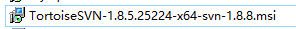
直接双击安装包进行安装,安装完成后，在已经申请了SVN权限的前提下（如果没有权限可找相关负责人进行申请）Checkout
地址：http://192.168.60.251/svn/xian-new/pva_project/trunk
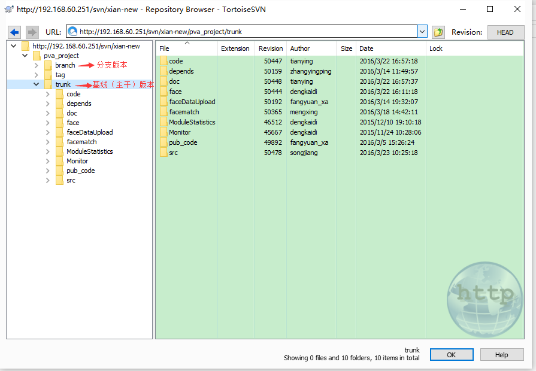
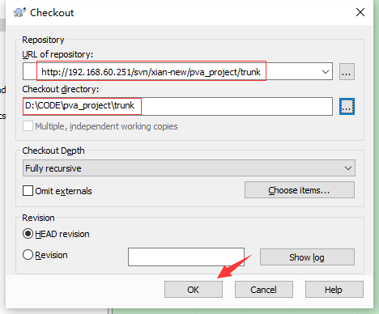
2、安装JDK JAVA开发环境和MySQL服务。
运行安装JDK，并配置全局环境变量。
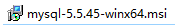
运行图中的安装程序安装MySQL服务程序，安装过程中可设置管理员用户名和密码（一般为username:root password:1234或root）
安装完MySQL服务之后接下来安装服务器客户端Navicat
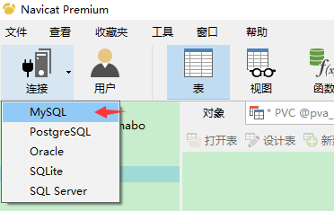
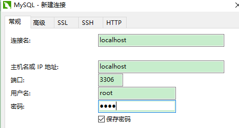
然后导入PVA数据库脚本文件建立PVA数据库脚本文件在第一步中SVN导出的代码结构中的doc文件夹中，如下图所示：
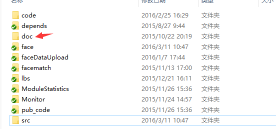
进入下面目录中
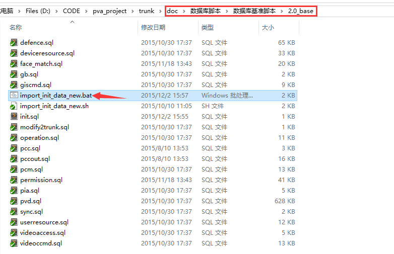
右键文本编辑的形式打开图中标出的文件
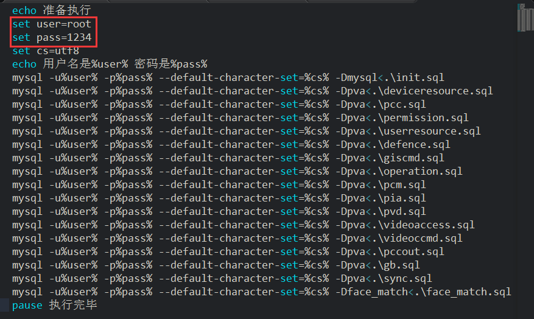
按照图中指出的修改对应的用户名和密码为自己本地的配置，保存后再将该文件双击运行即可导入PVA初始的建库脚本到本地的MySQL服务器中。
导入完成后可以从Navicat客户端里看到pva数据库中的表结构信息
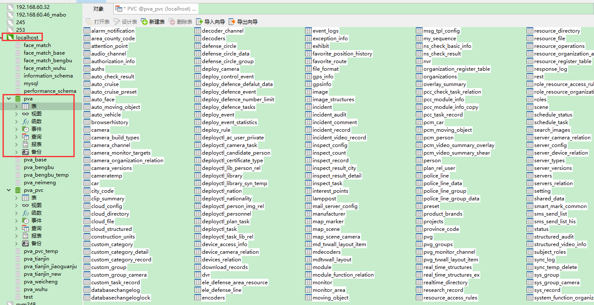
表比较多，大多属于业务相关的表，另有关于数据库表介绍的文件进行具体介绍，这里就不做过多。
接下来还需要导入数据库的增量脚本，文件目录如下图所示：
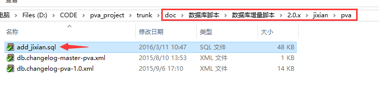
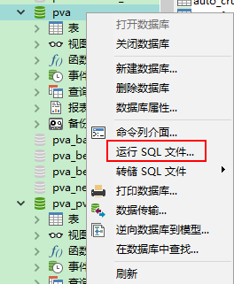
在Navicat中鼠标右键点击pva数据库，选择运行SQL文件选项
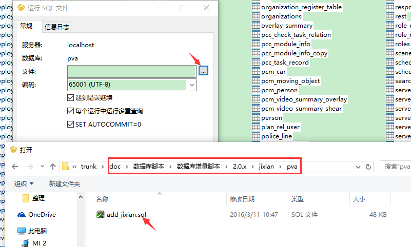
选中升级脚本文件然后点击开始，等待完成。
至此，PVA数据库已被完整的创建。
###3、创建本地构建库、安装Maven构建工具
首先要在本地创建一个本地构建代码库用来存储一些项目所依赖的内部或第三方的依赖包。
推荐路径为：D:\Java\maven-repository
建好本地构建库的文件夹后，接下来安装Maven构建工具
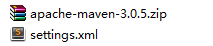
从PVA开发工具套装中获取Maven包后，打开可以看到里面有如上图所示的文件，其中apache-maven-3.0.5.zip为免安装工具包，直接解压到自己合适的硬盘位置中即可，如下图所示：
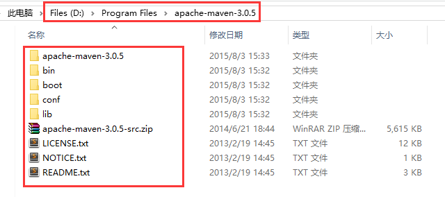
另外settings.xml文件是已经是按照PVA项目信息配置好的maven配置文件，如果本地构建库为上面推荐的目录（D:\Java\maven-repository）的话，可用该文件直接替换掉conf文件夹中的相同文件。
如果本地构建库的目录与推荐路径不一致则需要打开该文件进行修改：
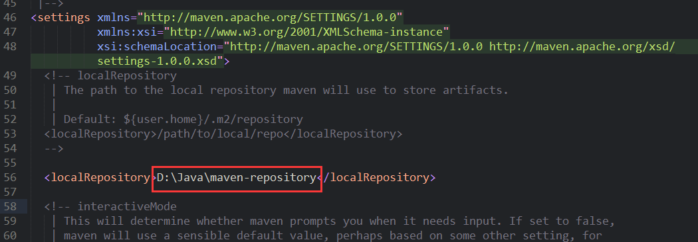
只需将图中标记的部分修改为自己的构建库目录即可。
添加maven的环境变量,如下图所示
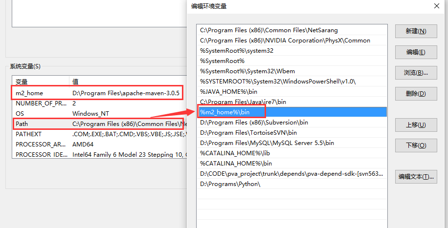
至此，本地构建环境搭建完成。
4、非IDE的程序编译打包
由于maven本身就是一个构建工具，因此可以通过一些命令进行程序的编译和打包。
打开项目源码中的code文件夹可以看到一个mvn cmd.txt的文件，如下图所示：
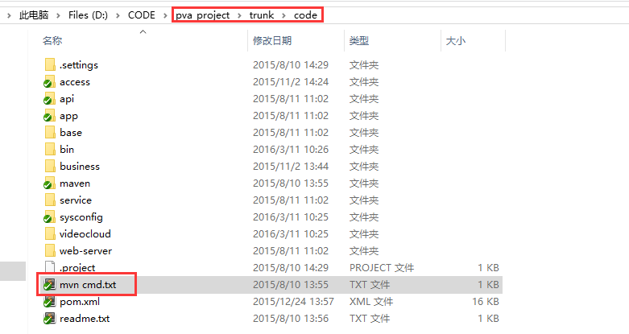
打开该文件可以看到一些常用的编译、打包等命令
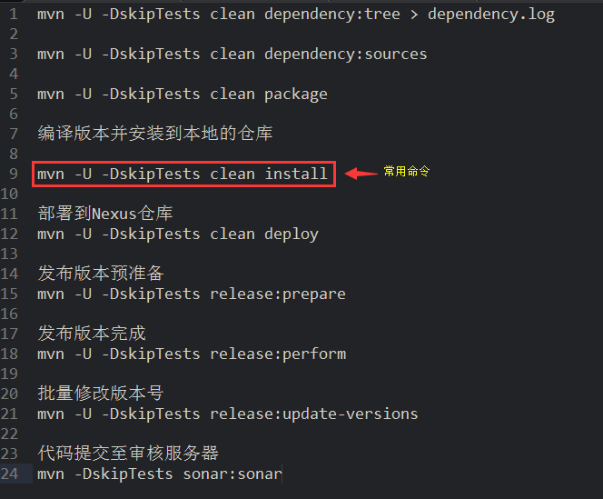
不过，在编译打包之前我们需要先修改一些配置信息
打开项目源码按照下图的目录找到标记的文件并打开
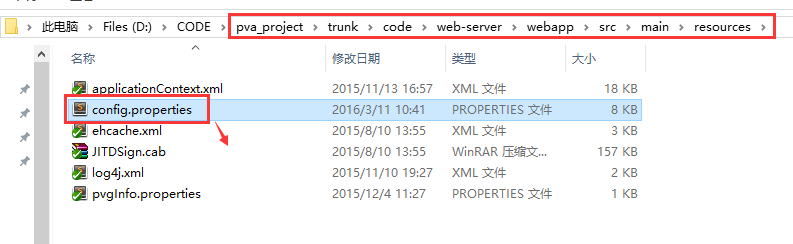
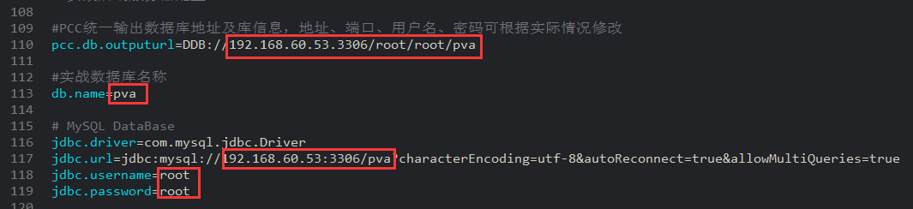
将图中标出的部分改为当前机器（本机）的配置参数，主要是数据库名称和IP地址、数据库的用户名和密码信息，这样就可以保证程序在本地可以编译且运行。
至于该文件的其它配置信息此处先不做详细解释，后面将会具体介绍。
现在就可以对程序进行编译打包：
进入CMD模式找到程序源代码（code文件夹）所在的包，然后输入下面命令：mvn -U -DskipTests clean install ,回车即可。
注意：如果当前机器是第一次构建，由于本地构建库没有任何依赖包，因此需要动态的从公司的公共内部库进行自动load依赖包，导致编译过程可能比较慢，耐心等待即可。
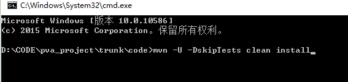
当看到下图中的信息时表示已经成功的编译完整个PVA项目工程。
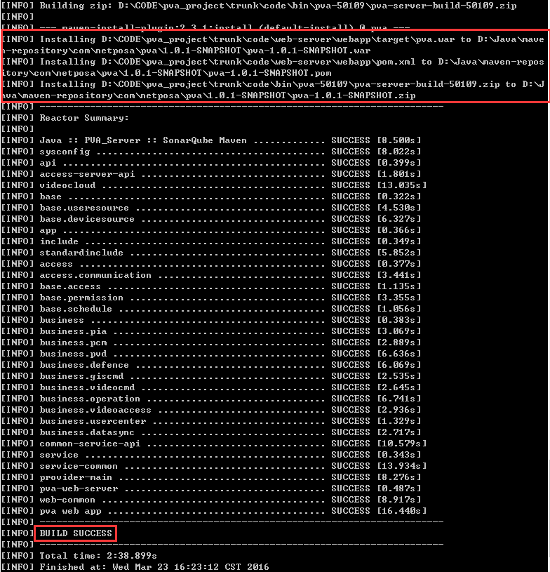
其中图中的上面标记出的部分可以看出构建好的包自动被打到本地构建库中，这时可以根据目录去本地的构建库中去查看已经打好的包（同时也会发现本地的maven构建库中多了很多包，这是构建过程中自动下载的依赖包，以后再编译就不用再去服务器下载）。
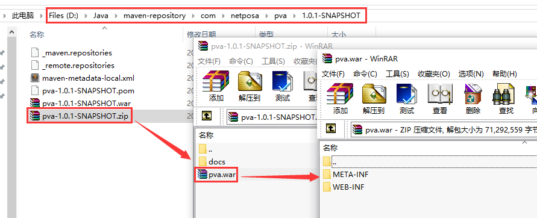
同样也可以在code/bin文件夹中找到被打好的包，如下图所示：
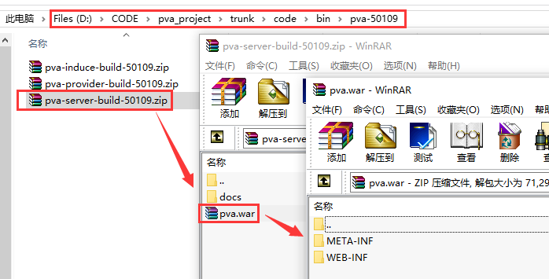
5、运行环境以及依赖配置
a、安装Tomcat服务器
该zip包是一个免安装的tomcat安装包，解压到合适的位置即可。
接下来需要配置tomcat的环境变量:
在系统变量中添加 CATALINA_BASE和CATALINA_HOME两个变量，值均为tomcat的根目录（含bin文件夹的目录）如下图所示：
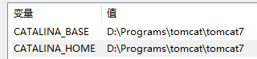
同时，还需要在Path变量中添加下图中的两个值
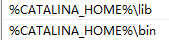
到这里已经将tomcat服务器安装配置完成。
b、依赖项
PVA如果要运行起来还需要依赖一些其它的程序和配置。
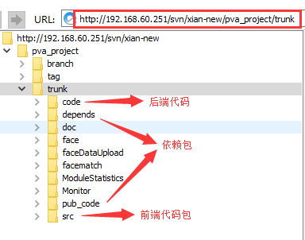
动态库：
首先找到主干代码包中的depends\pva-depend-sdk-[svn56357]\windows_x64包，需要将该包的路径添加到Path环境变量中，如下面地址D:\CODE\pva_project\trunk\depends\pva-depend-sdk-[svn56357]\windows_x64
依赖包：上图中的depends包是运行必不可少的包。pub_code包是一些依赖包的源码。
前端代码：src包中全部为PVA的前端代码。
LBS：lbs是PVA项目中使用的地图相关的资源，同样也需要配置。Lbs代码的SVN地址为（如果没有权限可找相关负责人帮助申请）:http://192.168.60.251/svn/xian-new/gis_platform/trunk/code
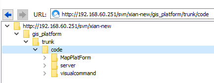
c、Nginx安装和配置
从共享目录中去除nginx-1.6.2的包，打开里面的conf文件夹需要改动两个文件：
nginx.conf和netposa包中的pva.conf
1、nginx.conf中将下图所标出的IP和端口号改为本机的信息即可。
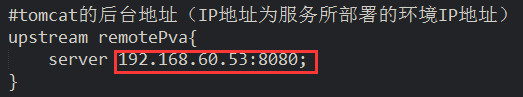
2、pva.conf中将下图中标记的部分分别改为本机的前端代码src包的目录和lbs地图资源包visualcommand的目录即可。
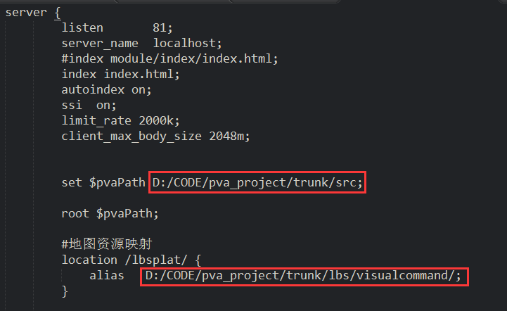
另外： 启动nginx服务可以使用start nginx命令也可以双击nginx.exe运行，如果用户在nginx正在运行的情况下修改了相关配置文件，则需要重启nginx服务，可以使用nginx –s reload命令进行重启，从而是修改的配置生效。
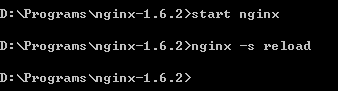
d、安装谷歌浏览器
从共享目录PVA开发工具套装中可以找到浏览器安装包。将其安装到本地，该浏览器是我们开发中所使用的主要浏览器。
6、启动PVA服务
在上面的步骤中我们已经做好了准备工作，现在就可以启动PVA服务了。
1、首先将tomcat根目录中的webapps\ROOT目录下清空，然后将上面第4步中打好的包（主要是META-INF包和WEB-INF两个包）取出来，放入到ROOT包中。
2、启动nginx服务。
3、启动tomcat服务：双击bin目录下的startup.bat文件或者在当前目录下用catalina run命令来启动运行。
4、看到下图中所标记的部分且程序没有报错即表示服务已经成功启动。
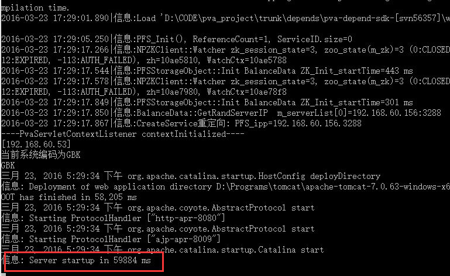
5、打开谷歌浏览器查看主页http://localhost:81/login/ （建议开发人员保存常用的url以方便后续开发和调试）。在浏览器中输入上面的URL地址可以看到下面的界面
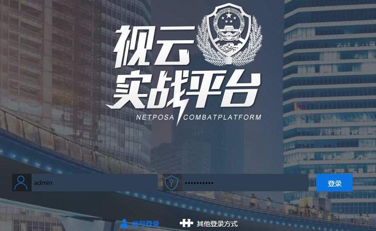
系统默认的初始管理员登录帐号是用户名：admin 密码：admin
登录成功之后会提示更改密码，按步骤操作即可。
如果本地未安装OCX视频播放插件，系统还会提示安装相应插件，同样按步骤操作安装（默认安装）即可。安装之后需要重启浏览器并重新登录。
这次登录成功后会看到下图中页面，至此PVA服务已经成功启动。
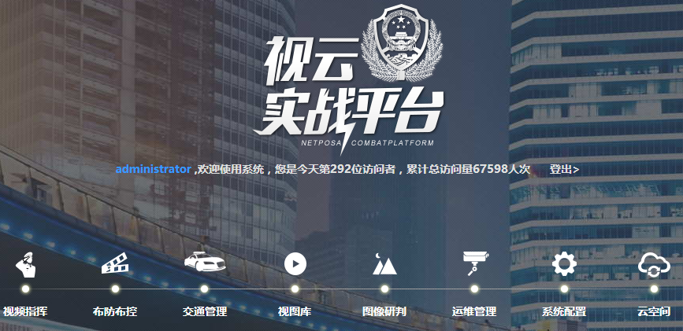
三、IDE开发介绍
Eclipse开发环境
Eclipse是当下非常流行的java开发IDE，此处不对IDE本身做过多介绍，只是说明一下PVA开发，Eclipse需要配置的地方。
JRE配置
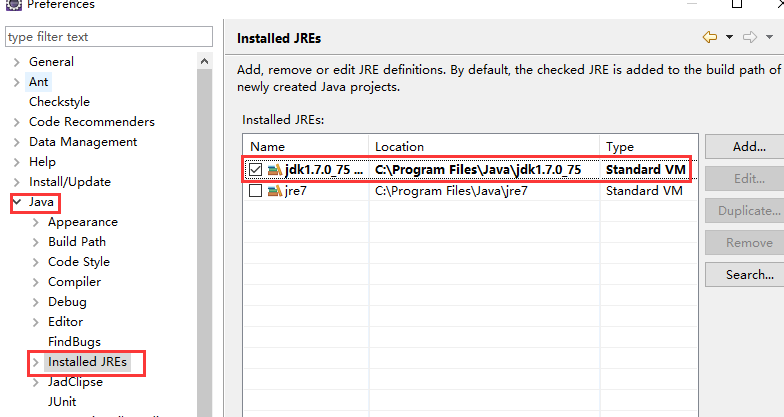
Maven配置
不要是用Eclipse自带的Maven设置，添加本机已安装的Maven根目录，然后勾选。
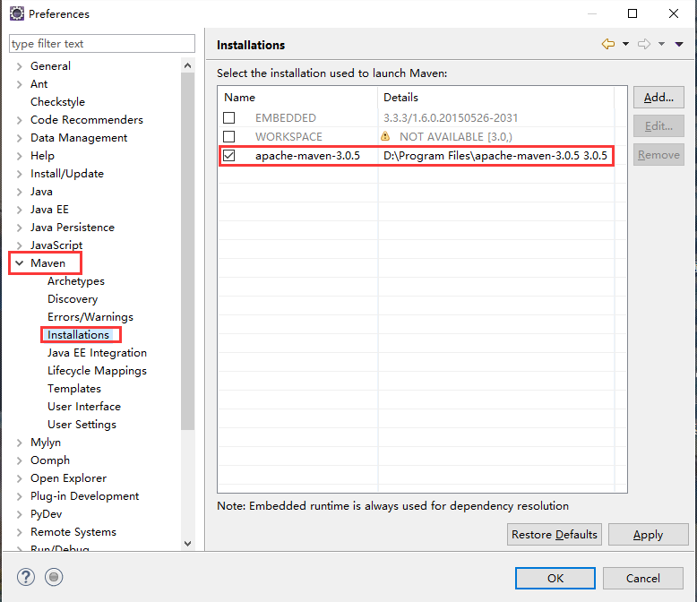
同时，User Settings选项也要改为本机的Maven配置文件的目录
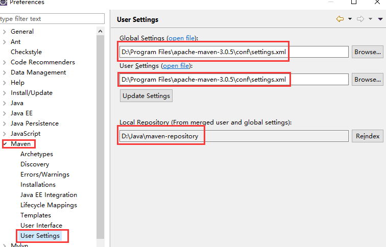
导入源码并编译
我们的项目开发使用的是Maven管理工具，因此通过Maven导入的方式整体导入项目所需要的所有工程。
点击File –> import选项
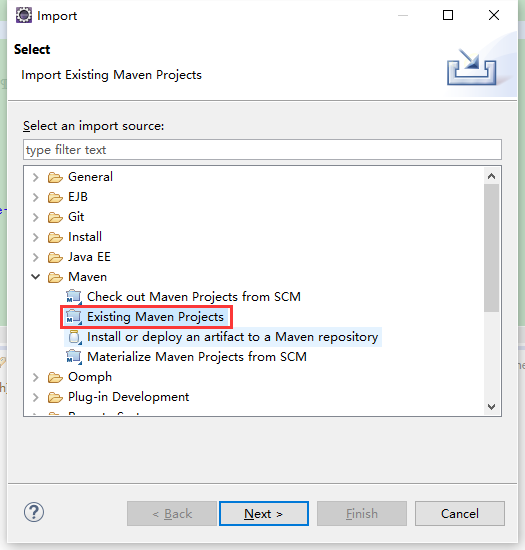
选中图中标出的选项，点击Next
点击Browse找到PVA后端源码（code包）的位置，然后选中code包确定。如下图所示：
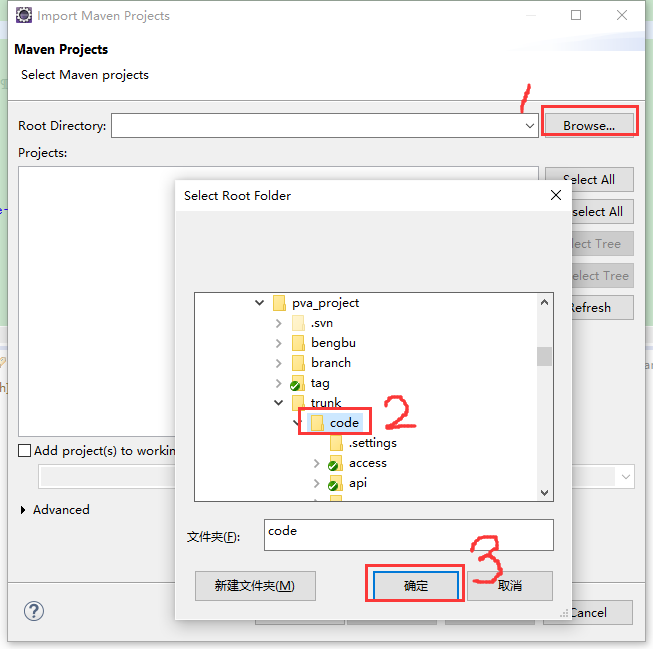
接着再点击Finish完成导入。
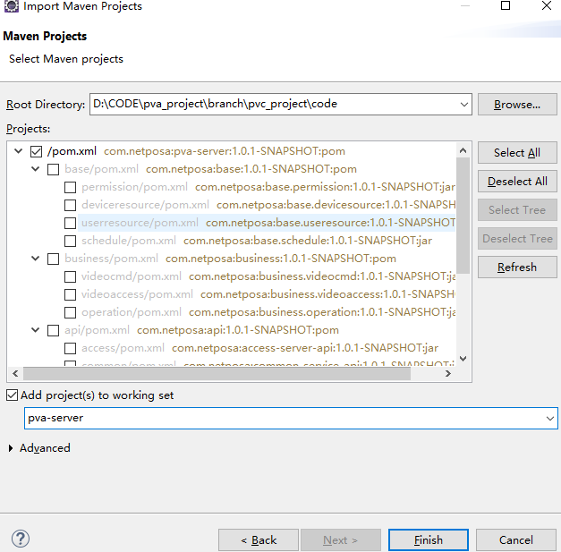
编译代码：
直接编译项目最顶层的程序（pva-server）即可
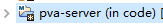
- 右键上图的项目->Run as -> 选择第二个Maven build（下次运行选择第一个即可）
- 在Goals选项框中输入 clean install
- 点击Apply -> Run
- 从Console中看到编译的过程，当看到BUILD SUCCESS时即表示构建成功
注意：每次编译后都要将被编译的项目刷新一下，否则发布会时可能报错（这是Eclipse的一个小问题）
创建服务器配置
操作顺序如下面所示File -> New -> Other -> Server -> Server -> Next
这时可以看到下面界面
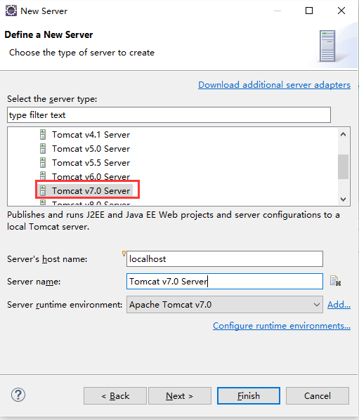
- 点击Finish完成创建
如果没有Servers窗口，则需要下面操作显示Servers窗口Window -> Show View -> Servers
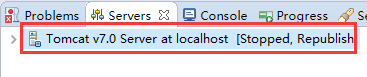
可以在下面的窗口中看到我们添加的服务器配置
- 鼠标右键点击图中标出的部分选择 Add and Remove选项 添加 pva项目
- 接着双击上图中标记的部分
- 将Overview视图中的Timeouts选项中的Start (in seconds)选项中的时间设置的大一些（比如1000）
- 再点击Modules视图
- 选中pva的那一项然后点击 Edit
- 保持与下图中的设置一致，确认后OK
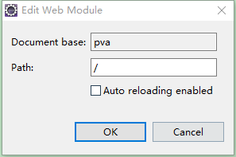
然后就可以通过Eclipse启动服务了，一般都采用Debug模式启动，方便跟踪问题。
常用的启动命令，编译刷新后 选中服务配置项
- Ctrl+Shift+P：发布工程
- Ctrl+Shift+D：Debug模式启动工程
四、其它相关
MongoDB:
MongoDB主要是用来存储系统日志信息的，具体的配置和使用可以从开发工具套装的包里获取MongoDB的安装包里的说明文档查看具体的使用方法。